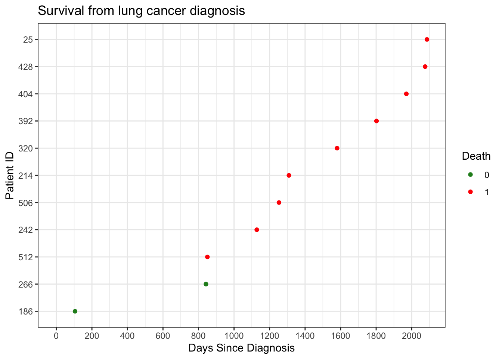

This report demonstrates an end-to-end workflow for transforming synthetic EHR data into an analysis-ready dataset and performing a survival analysis on patients with lung cancer.
Specifically, this analysis:
ingests structured data derived from synthetic EHR records (Synthea)
constructs a patient-level dataset with time-to-event outcomes
applies survival analysis methods to estimate time from diagnosis to death
Data Source
Data for this analysis was generated using Synthea, a synthetic patient generator that produces realistic EHR-style records. The raw JSON output was processed into parquet files (patients, conditions, encounters) prior to this analysis.
The R code in this script can be viewed by clicking on Code.
The R script for turning synthetic EHR JSON data into tabular parquet files can be viewed on Github here.
To simplify joins across datasets, synthetic patient identifiers were replaced with sequential IDs. Date fields were also standardized for downstream analysis.
1 Determined by condition of 'Non-small cell lung cancer (disorder)'
The plot below shows time from diagnosis to either death or censoring for each patient.
Key observations: - The cohort contains 11 patients - Time is measured relative to each patient’s diagnosis date (time zero) - With a small sample size, time to event fully separates observed outcomes
Code
# view survival outcomes ggplot(surv_df, aes(y =reorder(pid, outcome_days), x = outcome_days)) +geom_point(aes(color =factor(death_outcome))) +theme_bw() +expand_limits(x =0) +scale_color_manual(values =c("0"="forestgreen", "1"="red")) +labs(title ="Survival from lung cancer diagnosis",x ="Days Since Diagnosis",y ="Patient ID",color ="Death" ) +scale_x_continuous(breaks =pretty_breaks(10))

We will plot a Kaplan-Meier curve to show the survival probability against days since diagnosis.
Code
# kaplan meier curvekm_fit <-survfit(surv_obj ~1, data = surv_df)#plot(km_fit, xlab = "Days", ylab = "Survival Probability", col = "blue", lwd = 2)ggsurvplot(km_fit, data = surv_df, conf.int =TRUE, risk.table =TRUE)
Cox Proportional Hazards Model
It is not standard to fit a survival model with such a small sample size (n = 11). The model is included here for demonstration of workflow.
Here is the Cox PH model
\[h(t|x) = h_0(t)e^{\beta x}\] where:
\(x\) is age at onset
\(t\) is the days since diagnosis
\(h_0(t)\) is the unspecified baseline hazard function
\(\beta\) is the additive effect of age on the log-hazard
The hazard ratio for each unit increase in onset_age is obtained by exponentiating the coefficient:
Code
# age is only covariatescoxph_fit <-coxph(surv_obj ~ onset_age, data = surv_df)coxph_output <- broom::tidy(coxph_fit, conf.int =TRUE, exponentiate =TRUE)gt(coxph_output %>%select(term, estimate, conf.low, conf.high, p.value) ) %>%tab_header("Time to Death following Lung Cancer Diagnosis",subtitle ="Cox Proportional Hazards Model" ) %>%fmt_number(columns = estimate:p.value) %>%cols_label(term ="Covariate",estimate ="Haz Ratio",conf.low ="Lower 95% CI",conf.high ="Upper 95% CI" )
Time to Death following Lung Cancer Diagnosis
Cox Proportional Hazards Model
Covariate
Haz Ratio
Lower 95% CI
Upper 95% CI
p.value
onset_age
1.03
0.97
1.09
0.35
Interpretation
The hazard ratio represents the multiplicative change in the hazard of death associated with a one-year increase in age at diagnosis. Given the small sample size, estimates are primarily illustrative.